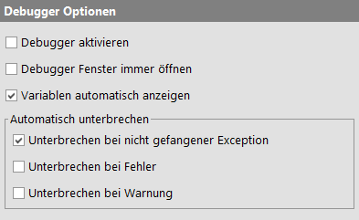

| Version 6.0.3 |
Diese Optionen haben Einfluss auf das verhalten des Debuggers.
|
|  | ||
|
| Abbildung 37.33: Debugger Optionen | ||
Normalerweise ist der Debugger inaktiv so lange diese Option, die auch über den Menüeintrag »Debugger«-»Debugger aktivieren« zugänglich ist, ausgeschaltet ist.
Der Debugger wird automatisch aktiv, wenn der Test auf einen Breakpoint trifft oder explizit durch drücken des "Pause" Buttons unterbrochen wird. Wird ein Testlauf mittels "Einzelschritt ausführen" oder "Gesamten Knoten ausführen" gestartet, ist der Debugger für die Dauer dieses Testlaufs ebenfalls aktiv.
Wenn ein Testlauf unterbrochen und der Debugger aufgerufen wird, kann QF-Test optional ein eigenes Fenster für den Debugger öffnen. Diese Option legt fest, ob für das Debuggen dieses separate Fenster oder das normalen Testsuite-Fenster genutzt werden soll.
Wenn ein Testlauf unterbrochen und der Debugger aufgerufen wird, kann QF-Test die aktuell gebundenen Variablen im Workbench-Fenster darstellen. Ist diese Option gesetzt, werden die Variablen-Ansicht immer automatisch geöffnet, wenn ein Testlauf zum ersten mal den Debugger betritt. Alternativ können die Variablen im Debugger-Fenster oder über das Menü »Debugger«-»Variablen anzeigen« im Workbench-Fenster angezeigt werden.
Diese Optionen legen fest, in welchen Situationen die Ausführung eines Tests unterbrochen und der Debugger aufgerufen wird.
| Letzte Änderung: 6.9.2022 Copyright © 1999-2022 Quality First Software GmbH |